Esta rodada mexe só na interface. A API, o formato JSON e o banco são os mesmos da 1.1.0, então quadros exportados antes abrem sem conversão.
@ana #bug !alta >sexta já preenche responsável, etiqueta, prioridade e prazo, com uma prévia antes de salvar (seção 4.4).docs/fonte/.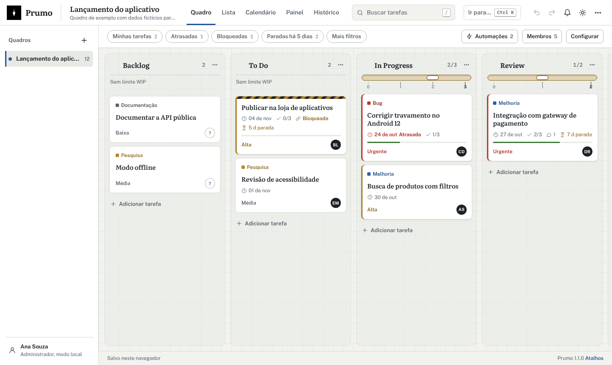
O Prumo é um gerenciador de tarefas no estilo Kanban. Toda a lógica do quadro fica em módulos JavaScript na pasta web/js e roda direto no navegador, sem etapa de build.
Mover tarefas, limites WIP, dependências, automações, desfazer e refazer, métricas, filtros, adição rápida, importação e exportação são funções puras testadas no Node. O servidor em Django é opcional. Sem ele, o Prumo guarda tudo no localStorage do navegador. Com ele, os quadros vão para o PostgreSQL, cada pessoa entra com a própria conta, os papéis passam a valer e as alterações chegam por WebSocket a quem estiver com o mesmo quadro aberto.
| Parte | Tecnologia | Pasta |
|---|---|---|
| Interface e núcleo | JavaScript (ES2022), HTML5, CSS3, API de Drag and Drop nativa | web/ |
| API REST e tempo real | Python 3.13, Django 6.1, Channels 4, Daphne | prumo/ |
| Banco de dados | PostgreSQL 17 (SQLite para desenvolvimento) | prumo/models.py |
| Relatórios | Node.js 20+ e Java 21 | scripts/, ferramentas/java/ |
| Manuais | HTML, CSS e WeasyPrint | docs/fonte/ |
O nome vem do prumo de pedreiro, o peso na ponta de um fio que mostra o que está alinhado. A interface é uma mesa de obra: papel milimetrado sob o quadro, tinta grafite, o azul da linha de giz para ações e foco e o latão para destaques. O logo é sempre em preto e branco: o prumo em branco dentro de um quadrado preto, sem cantos arredondados. O limite WIP de cada coluna é um nível de bolha.
Nome do quadro, colunas, títulos das tarefas e das janelas. As tarefas parecem fichas escritas.
Botões, filtros, campos, selos e textos de apoio.
Números que se comparam: contagens das colunas, limite WIP, dias na coluna, atalhos.
| Para | Você precisa de |
|---|---|
| Rodar tudo (recomendado) | Docker Desktop (Windows ou macOS) ou Docker Engine com Compose (Linux) |
| Só a interface | Node.js 20 ou mais novo, ou qualquer servidor de arquivos estáticos |
| Servidor sem Docker | Python 3.13 e, se quiser, PostgreSQL 17 |
| Ferramenta em Java | JDK 21 |
| Navegador | Chrome, Edge, Firefox ou Safari atualizados |
Com Docker, um script sobe o banco e o servidor e abre o navegador. Sem Docker, dá para usar só a interface ou o Django direto.
git clone https://github.com/Violet-pixel/Interactive-Kanban-Board.git ou pelo ZIP do botão Code no GitHub.iniciar.cmd. No Linux ou no macOS, rode ./iniciar.sh..env.example para .env e sorteia a senha do banco e a chave do Django.postgres (banco) e web (Django e Daphne). O web aplica as migrações e cria a demonstração se o banco estiver vazio./api/v1/saude responder, o navegador abre em http://localhost:8080.docker compose ps # estado dos contêineres docker compose logs -f web # acompanhar o servidor docker compose down # parar (os dados ficam no volume) docker compose down -v # parar e apagar banco e anexos
| Papel | O que pode fazer | |
|---|---|---|
| Administrador | admin@prumo.dev | Tudo, incluindo membros e exclusão do quadro |
| Gerente | gerente@prumo.dev | Tarefas, colunas, etiquetas, limites WIP e automações |
| Membro | membro@prumo.dev | Criar, editar, mover e comentar tarefas |
| Visualizador | leitura@prumo.dev | Só consultar |
Todas usam a senha Prumo@2026. Os nomes são fictícios e os e-mails usam o domínio de exemplo prumo.dev.
Rode npm run servir na pasta do projeto e abra http://localhost:5173. O Prumo abre com o quadro de exemplo e grava cada alteração no navegador. Os dados ficam só naquele navegador e naquele computador. Para levá-los a outro lugar, use Menu, Exportar e importar.
python -m venv .venv .venv\Scripts\activate # Windows (Linux e macOS: source .venv/bin/activate) pip install -r requirements.txt python manage.py migrate python manage.py seed # contas e quadro de demonstração daphne -p 8000 prumo.asgi:application
Sem variáveis de ambiente, o Django usa SQLite (prumo.sqlite3). Para usar PostgreSQL, defina PRUMO_DB_ENGINE=postgresql e as variáveis PRUMO_DB_* antes do migrate.
Tudo o que você muda é salvo na hora. Cada passo pode ser desfeito com Ctrl+Z.
| Área | O que tem |
|---|---|
| Barra superior | Logo, nome e descrição do quadro, abas Quadro, Lista, Calendário, Painel e Histórico, busca (/), Ir para (Ctrl+K), desfazer, refazer, notificações, tema e menu |
| Lateral | Quadros ativos com o total de tarefas, botão de novo quadro, arquivados, quem está online e a sua conta |
| Barra de filtros | Filtros rápidos com contagem, Mais filtros e, à direita, Automações, Membros e Configurar, conforme o papel |
| Rodapé | Situação do salvamento (Salvo neste navegador, Salvando…, Sincronizado ou Atualizado por …), a versão e o link Atalhos |
| Modelo | Colunas criadas, em ordem |
|---|---|
| Kanban | Backlog, To Do, In Progress (WIP 3), Review (WIP 2), Done |
| Scrum | Product Backlog, Sprint Backlog, Em andamento (WIP 4), Teste (WIP 2), Pronto |
| Desenvolvimento | Ideias, Especificação, Desenvolvimento, Code Review, QA, Produção |
| Estudos | Para estudar, Estudando (WIP 2), Revisar, Aprendido |
| Gestão de projetos | Planejamento, Execução (WIP 5), Aprovação (WIP 3), Entregue |
Em Configurar você renomeia o quadro, muda a cor, edita as etiquetas e decide se dependências bloqueiam ou só avisam. Ali também ficam Duplicar, Arquivar e Excluir quadro. Quadros arquivados saem da lista principal e aparecem em Mostrar arquivados. Duplicar copia colunas, tarefas, etiquetas e automações e começa um histórico novo.
Clique em Nova coluna no fim do quadro. Para mudar a ordem, arraste o topo da coluna. O botão de três pontos abre o nome, o tipo da etapa e o limite WIP.
| Tipo | Efeito |
|---|---|
| Espera | A tarefa ainda não começou. Dependências pendentes não impedem a entrada. |
| Em andamento | A primeira entrada marca o início do cycle time. |
| Concluído | Marca a data de conclusão. Sair dela reabre a tarefa. |
Com limite WIP, o topo da coluna mostra um nível de bolha com uma régua embaixo e o contador no formato tarefas/limite. A régua tem uma marca numerada por vaga, e a bolha anda até a marca do total de tarefas. Quando falta uma vaga, a bolha ganha contorno latão. Quando a coluna lota, o tubo fica vermelho e a próxima tarefa é recusada com uma mensagem.
Enquanto você arrasta uma tarefa, a coluna de destino fica azulada; se estiver cheia, avermelhada. Limite 0 significa sem limite; nesse caso a coluna mostra Sem limite WIP. Excluir uma coluna leva as tarefas dela para a coluna anterior.
Recolher. A seta à esquerda do nome encolhe a coluna numa faixa vertical com o nome e a contagem. Clique na faixa para abrir de novo. Uma coluna recolhida continua recebendo tarefas arrastadas (elas vão para o fim). A escolha fica salva no navegador, por quadro.
Clique em Adicionar tarefa no pé da coluna (ou tecle N), escreva o título e tecle Enter. O campo continua aberto para a próxima tarefa. Marcações no título preenchem os campos na hora, e uma prévia mostra o que foi entendido antes de salvar:
| Marcação | Preenche | Exemplos |
|---|---|---|
@nome | Responsável, pelo começo do nome de quem já está no quadro | @ana, @bruno_lima |
#etiqueta | Etiqueta existente; use hífen no lugar do espaço | #bug, #nova-funcao |
!prioridade | Urgente, alta, média ou baixa (ou só a inicial) | !alta, !u |
>prazo | Hoje, amanhã, dia da semana, data ou daqui a N dias | >sexta, >15/11, >+3 |
Marcações que não casam com nada aparecem na prévia como aviso e ficam fora do título. Automações da coluna rodam depois e podem completar ou trocar campos.
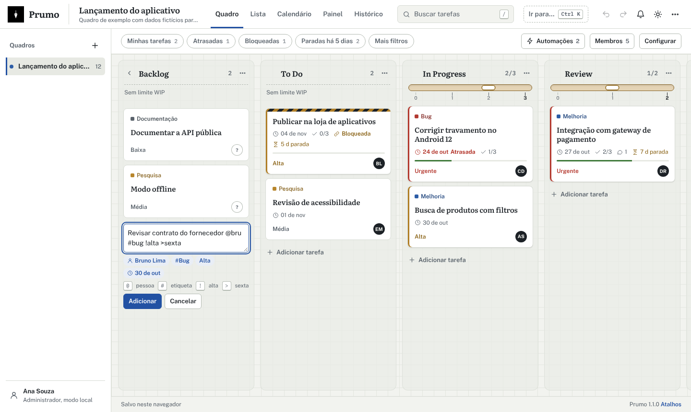
@bru #bug !alta >sexta vira responsável, etiqueta, prioridade e prazo.Clique no card para abrir os detalhes.
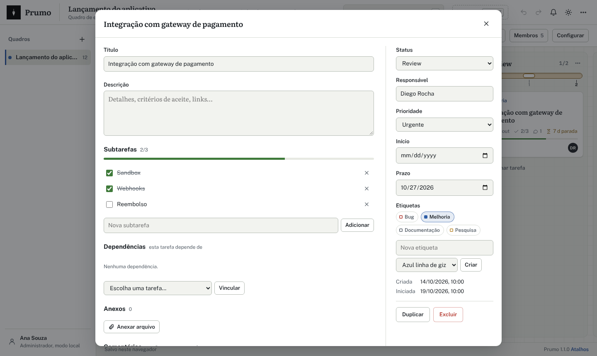
| Campo | Uso |
|---|---|
| Título e descrição | Salvos quando o campo perde o foco |
| Status | Move a tarefa para outra coluna, respeitando WIP e dependências |
| Responsável | Texto livre, com sugestões dos membros e de quem já tem tarefas |
| Prioridade | Urgente, alta, média ou baixa. No card, uma barra à esquerda: vermelha para urgente, latão para alta |
| Início e prazo | O prazo gera os selos Hoje e Atrasada, alimenta o calendário e as notificações |
| Etiquetas | Clique para ligar ou desligar. Gerentes criam etiquetas novas ali mesmo |
No pé da janela ficam Duplicar e Excluir. Excluir pede confirmação e pode ser desfeito com Ctrl+Z.
O Prumo usa só a API nativa do HTML5 (dragstart, dragover, drop, dragend). Enquanto você arrasta, uma linha azul marca onde a tarefa vai cair. Ao soltar, a função moverCard confere o limite WIP e as dependências, registra a movimentação, recalcula a ordem e roda as automações. Com filtros ativos, o arrastar continua funcionando.
| Com a tarefa em foco | Ação |
|---|---|
| Alt + → / ← | Próxima coluna / coluna anterior |
| Alt + ↑ / ↓ | Sobe ou desce na coluna |
| Enter | Abre a tarefa |
Ações rápidas. Ao passar o mouse (ou com a tarefa em foco), o rodapé do card mostra Assumir, que põe você como responsável, e um botão com o nome da próxima coluna, que move a tarefa para lá respeitando WIP e dependências. No celular os botões ficam sempre visíveis.
Tarefas paradas. Quando uma tarefa não concluída está há 5 dias ou mais na mesma coluna, o card ganha o selo com a ampulheta e o número de dias; a partir de 10 dias o selo fica vermelho. A contagem usa as movimentações da tarefa (ou a data de criação, se ela nunca saiu da coluna).
PRUMO_MAX_ANEXO_MB.@Nome para mencionar alguém; a pessoa recebe uma notificação.Com Impedir que tarefas avancem ligado (o padrão), mover a tarefa para uma coluna que não seja de espera é recusado. Desligado, o Prumo só avisa. Vínculos que formariam um ciclo são recusados. Ao excluir uma tarefa, os vínculos que apontavam para ela somem.
A busca (tecla /) procura em título, descrição, responsável e subtarefas, sem diferenciar acentos nem maiúsculas. Com vários termos, todos precisam aparecer. Os filtros se somam à busca e valem no quadro, na lista e no calendário.
| Filtro rápido | Mostra |
|---|---|
| Minhas tarefas (M) | As tarefas em que você é responsável |
| Atrasadas | Prazo anterior a hoje e tarefa não concluída |
| Bloqueadas | Tarefas com dependências ainda não concluídas |
| Paradas há 5 dias | Tarefas não concluídas há 5 dias ou mais na mesma coluna |
| Mais filtros | Responsável (ou sem responsável), etiqueta, prioridade, prazo (atrasadas, hoje, próximos 7 dias, sem prazo) e status |
Cada botão mostra quantas tarefas ele traria e fica escuro quando está ligado. Um segundo clique desliga; Limpar desliga todos. Com filtros ativos, o contador das colunas mostra “1 de 2”.
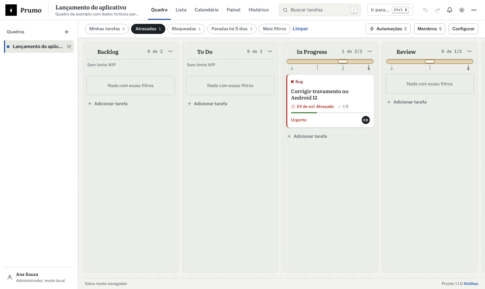
Ctrl+K (ou o botão Ir para, no topo) abre uma caixa que encontra pelo nome qualquer tarefa do quadro, outro quadro, uma vista ou uma ação (nova tarefa, minhas tarefas, novo quadro, exportar, tema, atalhos). As setas escolhem, Enter abre e Esc fecha.
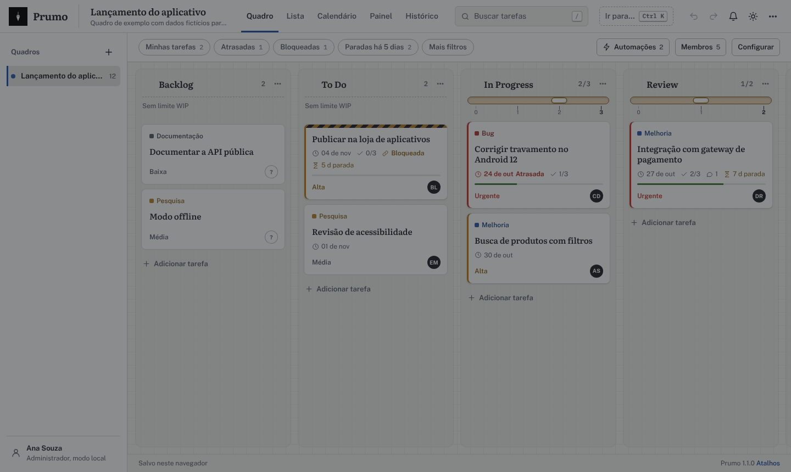
| Tecla | Ação |
|---|---|
| Ctrl+Z / Ctrl+Y | Desfazer / refazer |
| Ctrl+K | Ir para tarefa, quadro, vista ou ação |
| / | Buscar |
| N | Nova tarefa na primeira coluna |
| M | Só as minhas tarefas (de novo para todas) |
| 1 a 5 | Quadro, lista, calendário, painel e histórico |
| ? | Lista de atalhos |
O mesmo quadro visto de cinco jeitos. As abas ficam no topo e as teclas 1 a 5 trocam de uma para outra.
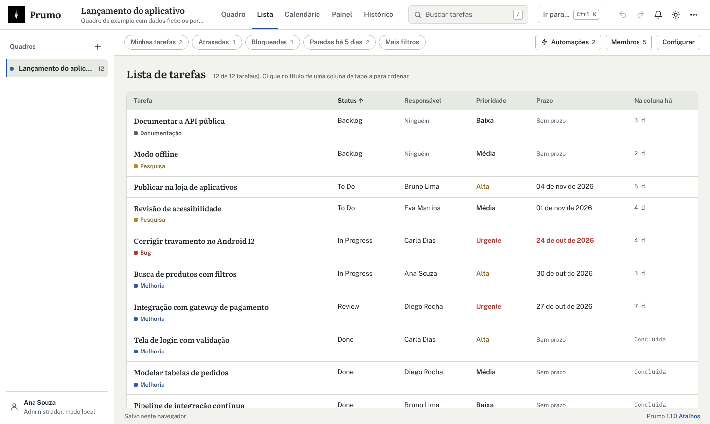
Uma linha por tarefa, com título e etiquetas, status, responsável, prioridade, prazo e há quantos dias está na coluna. Clique no título de uma coluna da tabela para ordenar; de novo para inverter. Clique numa linha (ou Enter com ela em foco) para abrir a tarefa. Os filtros e a busca valem aqui.
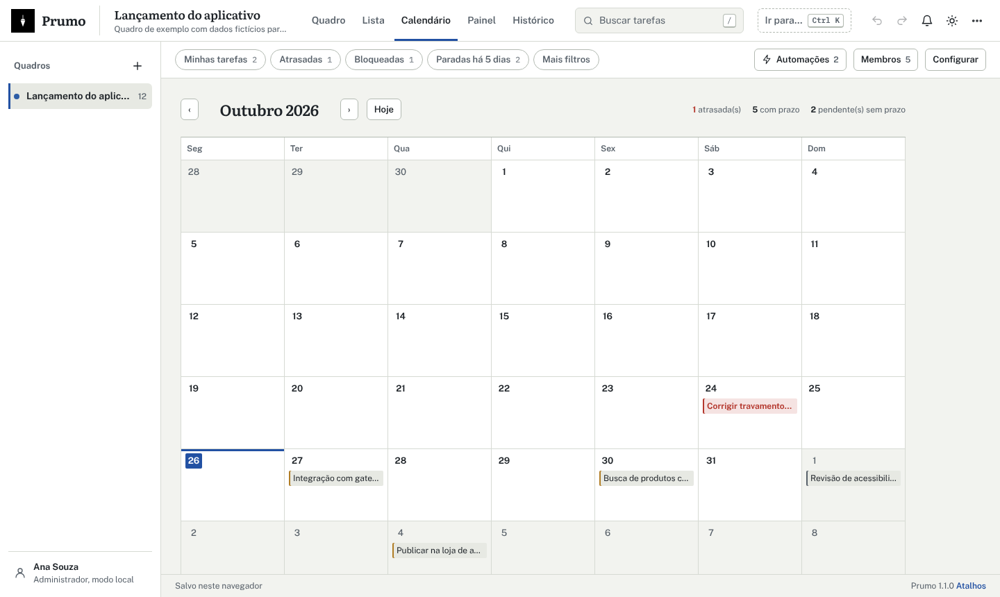
Mostra as tarefas com prazo no mês, com a semana começando na segunda-feira. As setas trocam o mês e Hoje volta ao mês atual. Tarefas atrasadas ficam em vermelho e aparecem também numa lista abaixo da grade. Clique numa tarefa para abri-la.
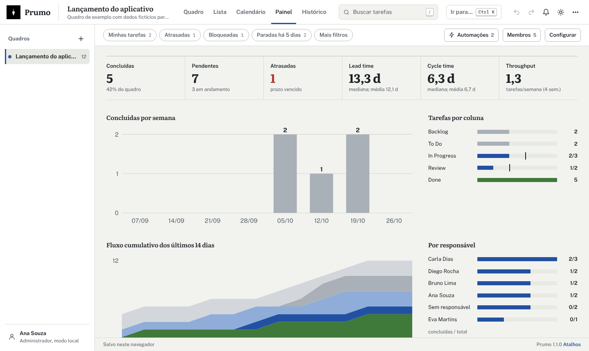
| Indicador | Cálculo |
|---|---|
| Concluídas e pendentes | Tarefas em coluna do tipo Concluído, e todas as outras |
| Atrasadas | Prazo anterior a hoje e tarefa não concluída |
| Lead time | Da criação até a conclusão (mediana e média, em dias) |
| Cycle time | Da primeira entrada numa coluna em andamento até a conclusão |
| Throughput | Média de tarefas concluídas por semana nas últimas 4 semanas |
| Fluxo cumulativo | Quantas tarefas estavam em cada coluna no fim de cada um dos últimos 14 dias, reconstruído pelas movimentações |
Os gráficos são SVG gerados em web/js/ui/vistas.js, sem bibliotecas. As fórmulas ficam em web/js/metricas.js; a idade na coluna, em web/js/filtros.js.
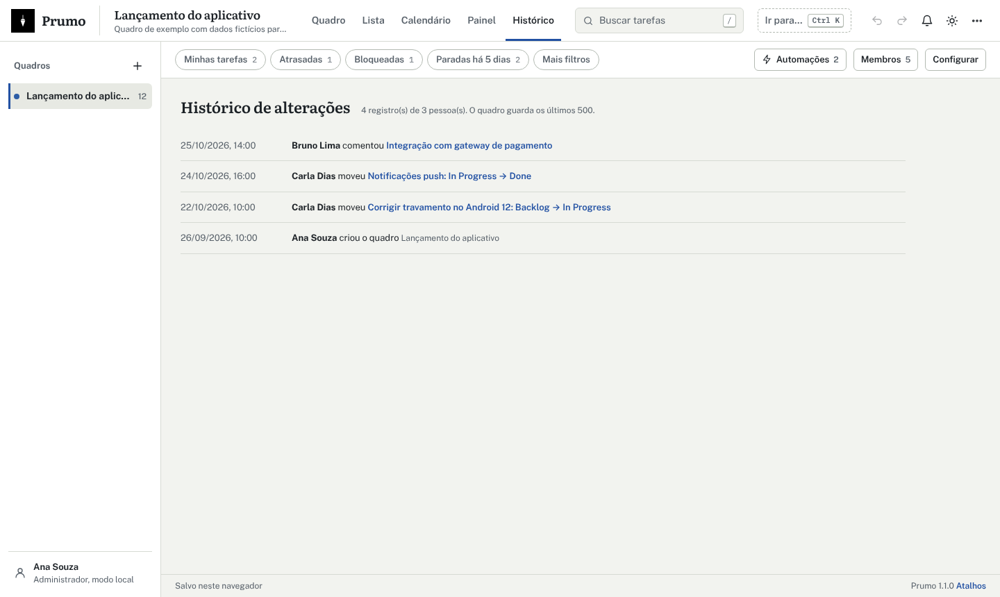
A aba Histórico lista as últimas 500 alterações do quadro com autor, ação e horário. A busca da barra filtra o histórico. Cada tarefa também mostra o próprio histórico. Desfazer e refazer guardam até 100 passos por aba do navegador; dá para desfazer qualquer operação, inclusive exclusões e importações. Quando outra pessoa altera o quadro no servidor, a pilha é zerada, para você não voltar por cima do trabalho dela.
Regras que fazem o trabalho repetitivo, avisos de prazo e menção, papéis por quadro e sincronização em tempo real.
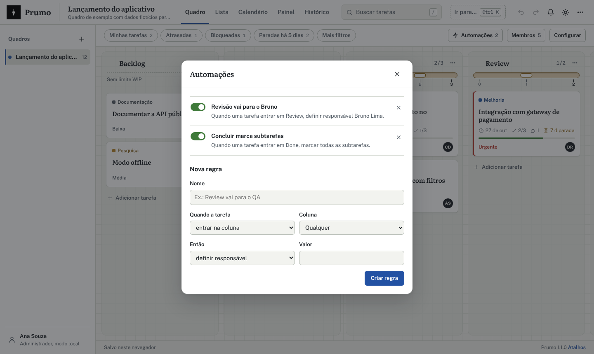
Uma regra tem um gatilho e uma ação. O gatilho é a tarefa entrar numa coluna ou ser criada nela; a coluna pode ser qualquer uma.
| Ação | Valor |
|---|---|
| Definir responsável | Nome da pessoa |
| Definir prioridade | Urgente, alta, média ou baixa |
| Adicionar etiqueta | Uma etiqueta do quadro |
| Mover para a coluna | A coluna de destino (respeita WIP) |
| Marcar todas as subtarefas | Não tem valor |
| Definir prazo em dias | Dias a partir de hoje |
Uma regra que move a tarefa pode disparar outras, até 3 níveis. Cada aplicação aparece no histórico com o autor Automação. O interruptor pausa a regra sem apagá-la.
O sino mostra quantas notificações não lidas existem. O Prumo verifica a cada minuto e a cada alteração: suas tarefas que vencem hoje ou estão atrasadas, comentários que mencionam você e atribuições ou alterações feitas por outras pessoas nas suas tarefas. Clique em Receber alertas do navegador para ver as notificações do sistema com a aba em segundo plano.
| Papel | Pode |
|---|---|
| Administrador | Tudo: membros e papéis, excluir o quadro, colunas, etiquetas, automações, tarefas |
| Gerente | Colunas, limites WIP, etiquetas, automações, configurações e tarefas |
| Membro | Criar, editar, mover, comentar e anexar em tarefas |
| Visualizador | Só consultar (sem ações rápidas nem adição de tarefas) |
admin@prumo.dev e Prumo@2026.Para dar acesso, o administrador abre Membros, informa o e-mail de uma conta existente e escolhe o papel. Contas novas são criadas com python manage.py criarusuario --email ... --nome "..."; com --admin, a conta vê todos os quadros.
| Opção | Resultado |
|---|---|
| Este quadro em JSON | Arquivo completo e reimportável, com colunas, tarefas, etiquetas, automações e histórico |
| Tarefas em CSV | Uma linha por tarefa, UTF-8 com BOM, separador vírgula |
| Todos os quadros em JSON | Backup de tudo o que está no navegador |
Colunas do CSV, nesta ordem: id, quadro, coluna, titulo, descricao, responsavel, prioridade, etiquetas, prazo, subtarefas_feitas, subtarefas_total, dependencias, criado_em, iniciado_em, concluido_em. Etiquetas e dependências são separadas por |. Na importação, só titulo é obrigatório; o separador ponto e vírgula também é aceito, e colunas ou etiquetas que não existirem são criadas.
API, relatórios pela linha de comando, variáveis de ambiente, onde mexer para personalizar e como testar.
Base: /api/v1. Envie Authorization: Bearer <token> em todas as rotas, exceto /, /saude e /auth/entrar. Erros vêm como {"mensagem": "..."}.
| Método e rota | Corpo | Resposta |
|---|---|---|
| POST /auth/entrar | {email, senha} | {token, usuario} |
| POST /auth/sair | Nenhum | Revoga o token |
| GET /auth/eu | Nenhum | {id, nome, email} |
| GET /quadros | Nenhum | Lista com id, nome, revisão e papel |
| POST /quadros | {dados} | 201; 409 se o id já existir |
| GET /quadros/{id} | Nenhum | {revisao, papel, dados} |
| PUT /quadros/{id} | {revisao, dados, registros} | {revisao}; 409 com a versão atual; 403 se o papel não permite |
| DELETE /quadros/{id} | Nenhum | Só administrador |
| GET /quadros/{id}/historico?limite=200 | Nenhum | Registros com autor |
| GET /quadros/{id}/tarefas | Filtros na URL: coluna, responsavel, etiqueta, prioridade | Tarefas em formato plano |
| GET|POST /quadros/{id}/membros | {email, papel} | Membro definido; papel remover tira o acesso |
| POST /quadros/{id}/anexos | multipart: card, arquivo | {id, nome, tipo, tamanho, url} |
| GET /anexos/{id} | Nenhum | O arquivo |
WebSocket: conecte em ws://servidor/ws/quadros/{id}/?token=.... O servidor envia JSON:
{"tipo": "quadro", "revisao": 8, "dados": {...}, "autor": "Bruno Lima"}
{"tipo": "presenca", "usuarios": ["Ana Souza", "Carla Dias"]}
{"tipo": "excluido"}
TOKEN=$(curl -s -X POST http://localhost:8080/api/v1/auth/entrar \
-H 'Content-Type: application/json' \
-d '{"email":"gerente@prumo.dev","senha":"Prumo@2026"}' | jq -r .token)
curl -s "http://localhost:8080/api/v1/quadros/qdr_demonstracao/tarefas?prioridade=urgente" \
-H "Authorization: Bearer $TOKEN"
Exporte o quadro em JSON e rode o relatório em JavaScript, que usa os mesmos módulos da interface. A ferramenta em Java lê o CSV exportado e não precisa de bibliotecas; o script compila na primeira vez.
npm run relatorio -- quadro.json bash ferramentas/java/prumo.sh resumo tarefas.csv bash ferramentas/java/prumo.sh atrasadas tarefas.csv 2026-10-21 bash ferramentas/java/prumo.sh responsaveis tarefas.csv ferramentas\java\prumo.cmd resumo tarefas.csv # Windows
| Comando | Mostra |
|---|---|
resumo | Totais, tarefas por coluna com barra e pendentes por prioridade |
atrasadas | Tarefas vencidas e não concluídas, da mais antiga para a mais nova |
responsaveis | Concluídas e total por pessoa |
As variáveis ficam no arquivo .env (modelo em .env.example) e são lidas por prumo/settings.py.
| Variável | Padrão | Uso |
|---|---|---|
| PRUMO_PORT | 8080 | Porta no computador |
| PRUMO_SECRET_KEY | gerada | Chave do Django |
| PRUMO_DEBUG | false | Modo de depuração |
| PRUMO_ALLOWED_HOSTS | localhost,127.0.0.1,[::1] | Domínios aceitos |
| PRUMO_CSRF_TRUSTED_ORIGINS | vazio | Origens confiáveis atrás de proxy |
| PRUMO_HTTPS | false | Redireciona para HTTPS |
| PRUMO_SEED | true | Demonstração em banco vazio |
| PRUMO_DB_ENGINE | sqlite | postgresql no Docker |
| PRUMO_DB_HOST, _PORT, _NAME, _USER, _PASSWORD | localhost, 5432, prumo, prumo, vazio | Conexão com o PostgreSQL |
| PRUMO_SQLITE_PATH | prumo.sqlite3 | Arquivo do SQLite, quando não há PostgreSQL |
| PRUMO_REDIS_URL | vazio | Channel layer em Redis (várias instâncias) |
| PRUMO_MAX_ANEXO_MB | 20 | Tamanho máximo por anexo |
| PRUMO_MEDIA_ROOT | ./anexos | Pasta dos anexos |
| PRUMO_TOKEN_HORAS | 168 | Validade do login |
| PRUMO_TIMEZONE | America/Sao_Paulo | Fuso horário |
| PRUMO_LOG_LEVEL | INFO | Nível do log no console |
| Objetivo | Arquivo | Como |
|---|---|---|
| Cores e temas | web/css/prumo.css | Altere as variáveis de :root (claro) e dos blocos [data-theme="dark"]; a grade do papel usa --grade e as raias, --raia |
| Novo modelo de quadro | web/js/modelos.js | Adicione uma entrada em MODELOS |
| Nova marcação da adição rápida | web/js/entrada.js | Trate o novo sinal em interpretarEntrada e escreva um teste em tests/js/entrada.test.js |
| Novo filtro rápido | web/js/filtros.js e app.js | Campo em FILTRO_VAZIO, regra em atendeFiltro e o botão em renderFiltros |
| Nova ação de automação | web/js/regras.js | Inclua o tipo em DESCRICOES_ACAO, trate-o em executarAutomacoes e crie o campo em ui/dialogos.js |
| Nova métrica | web/js/metricas.js | Escreva a função pura e mostre em renderizarPainel |
| Papéis | web/js/permissoes.js e prumo/views.py | Ajuste CAPACIDADES e o mínimo exigido em cada rota |
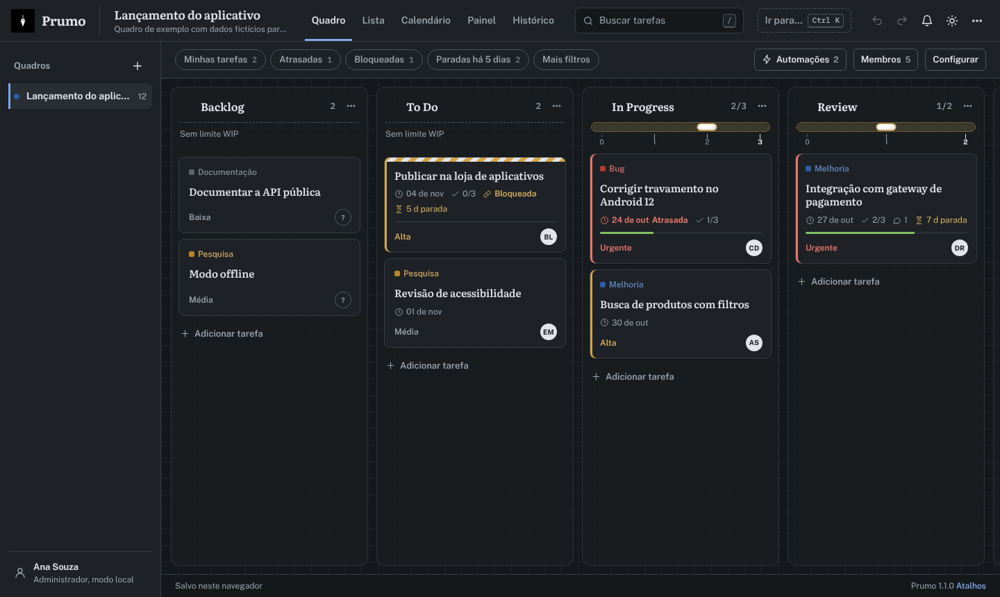
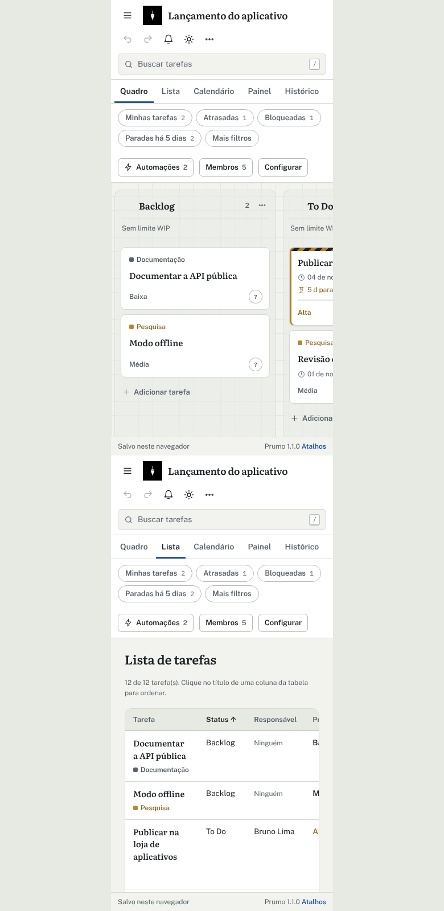
npm test # 35 testes do núcleo python manage.py test prumo # 20 testes da API e do WebSocket bash ferramentas/java/testar.sh # ferramenta em Java
O workflow .github/workflows/ci.yml roda os três conjuntos (o do Django com PostgreSQL 17) e monta a imagem Docker. Os testes novos cobrem a adição rápida (marcações, prazos por dia da semana, data e +N, avisos) e os filtros de bloqueadas e paradas.
Os dois PDFs saem de docs/fonte/, com as fontes de web/fonts e as capturas de docs/images:
pip install weasyprint==70.0 python docs/fonte/gerar_pdfs.py # os dois python docs/fonte/gerar_pdfs.py manual # só este manual
Os sintomas mais comuns e o que fazer.
| Sintoma | Causa e solução |
|---|---|
| Docker não encontrado | Instale o Docker Desktop e abra-o antes de rodar o iniciar.cmd. |
| A porta 8080 já está em uso | Troque PRUMO_PORT no .env e rode de novo. |
| Não aparece Entrar no servidor | A interface está sendo servida sem o Django (por exemplo, com npm run servir). Use a porta do Docker. |
| E-mail ou senha incorretos na demonstração | O seed só roda em banco vazio. Rode docker compose exec web python manage.py seed. |
| A tarefa não entra na coluna | A coluna está no limite WIP ou há dependências pendentes; a mensagem diz qual dos dois. |
A adição rápida não reconheceu @nome ou #etiqueta | A pessoa precisa ser membro ou já ter tarefas no quadro, e a etiqueta precisa existir. Use hífen no lugar do espaço. |
| Uma coluna sumiu | Ela está recolhida: procure a faixa vertical com o nome e clique nela. |
| Seu papel não permite essa alteração | Membros não mudam colunas, etiquetas nem automações. Peça ao administrador para mudar seu papel em Membros. |
| Anexo recusado no modo local | O arquivo passa de 2 MB. Use o servidor. |
| Os dados sumiram do navegador | Os dados do site foram limpos ou a janela era anônima. Faça backup com Todos os quadros em JSON. |
| O tempo real não atualiza atrás de um proxy | Libere o upgrade de WebSocket para /ws/ e defina PRUMO_ALLOWED_HOSTS. |
| Fontes antigas ainda aparecem | Recarregue sem cache (Ctrl+Shift+R) ou rode docker compose up -d --build. |
| Várias instâncias do servidor | Defina PRUMO_REDIS_URL para que todas compartilhem os eventos. |